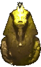

MUSIFIZIERT - ein Interview mit Enza
2016 hatte ich die Gelegenheit, im Rahmen eines Interviews einen kleinen Einblick in mein Wirken zu geben. In der Zwischenzeit sind bereits einige Stunden neuen Materials dazu gekommen, und in Zusammenarbeit mit Kollegen wurden noch weitere Projekte umgesetzt.
Mittlerweile bin in heimischere Gefilde zurück gekehrt und übe mich in der Tugend des sinnvollen Wirkens. Eine tiefe Dankbarkeit erfüllt mich den Persönlichkeiten gegenüber, die mir Anleitung und Unterricht in den Bereichen gaben und geben, die zukunftweisend sind.

♥